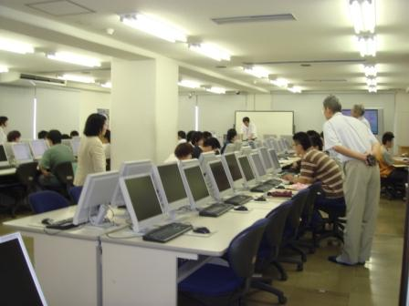
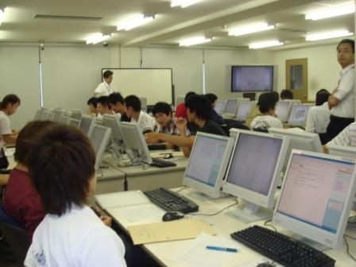
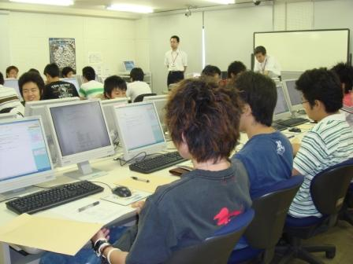

理大図書館を授業の一環として利用（理大専門学校編）平成19年7月9日(月)、岡山理科大学専門学校アクアリウム学科１年生の35名（2名欠席）が、授業の一環として理大図書館で実習を行いました。同学科が授業の一環として本学図書館の利用を始めたのは平成１７年度からで、平成１８年度は、リテラシー教育関連ということで、見学、ＯＰＡＣ検索、雑誌記事索引の検索（論題名に魚類及び繁殖がある文献を検索）を行いました。今回は「魚類繁殖理論、魚類繁殖実習の一環として、文献、参考図書などの資料の検索技術等を理解し、アクアリウム学科授業と自由研究活動に利用する」ことを目的としており、館内見学後、ＯＰＡＣ検索の実習に重点を置いて行いました。 ◆見学◆ １１号館２階で、図書館の概要説明を行い、２階、３階を回り、各階の配架資料を説明し、書架及び閲覧室を見学した後、１階へ移動し、１階の資料説明、電動書架の説明を行いました。見学は時間の都合上１１号館のみとなりました。３階では、魚類関連図書の配架してある書架で、所蔵図書を少しの間、閲覧しました。 ◆ＯＰＡＣ◆ 見学終了後、１１号館６階の情報処理センター第１実習室に移動し、ＯＰＡＣ検索の実習を行いました。 練習問題として、３つの項目から検索をしました。どの問題もアクアマリン学科の学生さんにとって馴染みのある図書から選んでみました。

まず、「タイトルで探す（１）」では、『深海の生物学』というタイトルの図書を例に表示される情報について説明がありました。

次に、「ヨミで探す」では、『クジラとイルカの図鑑』というタイトルの図書を例に、必ずしもタイトルは漢字で書かれているとは限らないので、ヒットしない時には、ヨミで検索する方法があることと、ヨミで検索すると、目的とは全く関係ないものもヒットすることの説明があり、実際に検索してみました。

「題名と著者で探す」では、『水族館』鈴木克美［著］を、検索条件にタイトルと著者名を同時に入力して検索する方法や、配架場所や出版年も指定して検索を絞り込む方法で検索してみました。 その後、ＯＰＡＣを使って自由に図書を検索して実習の時間は終了しました。 最後に、今後共図書館の利用を希望する方は、「図書館利用願（学部生に準ずる者）」に記入して提出されました。 理大図書館では、高校生の見学・業務体験以外にも、授業の一環として図書館の利用を随時受け入れております。実習内容等ご相談に応じますので、ご質問等ございましたら、先生を通じて図書館にご連絡下さい。但し、県内の学校に限らせていただきます。 |